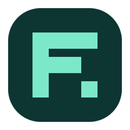

Opening your workspace…
Your work stays on this device.
Keep the host’s tab open while working together. Use the Share menu on the canvas to approve guests or change their access.
Use your own server for automatic connections. Leave blank to exchange an invitation and a reply link.
Optional network configuration from your administrator. Some networks need TURN to connect.
For an existing shared session, its current password and permissions apply.
Create an invitation, or paste one to join.